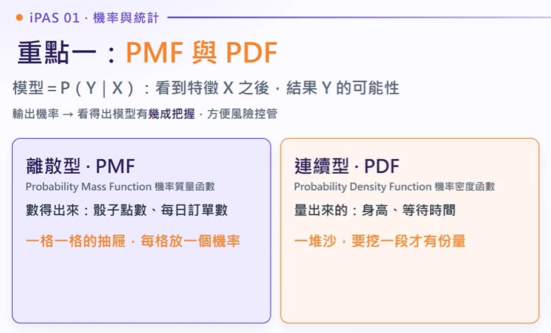
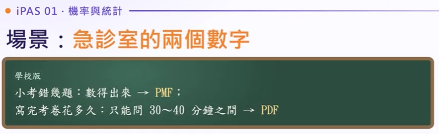
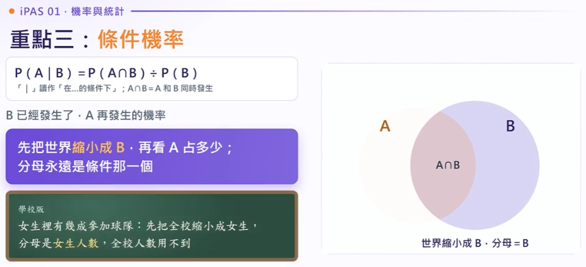
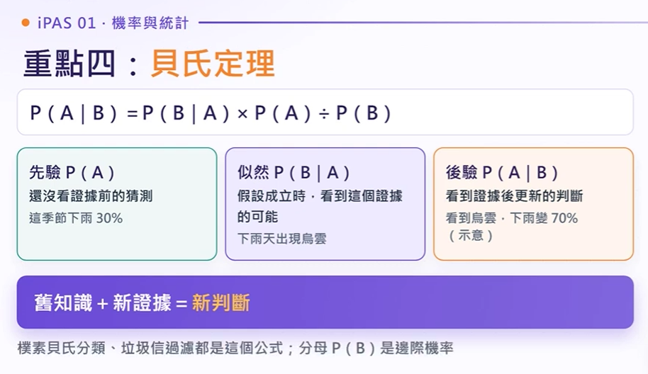
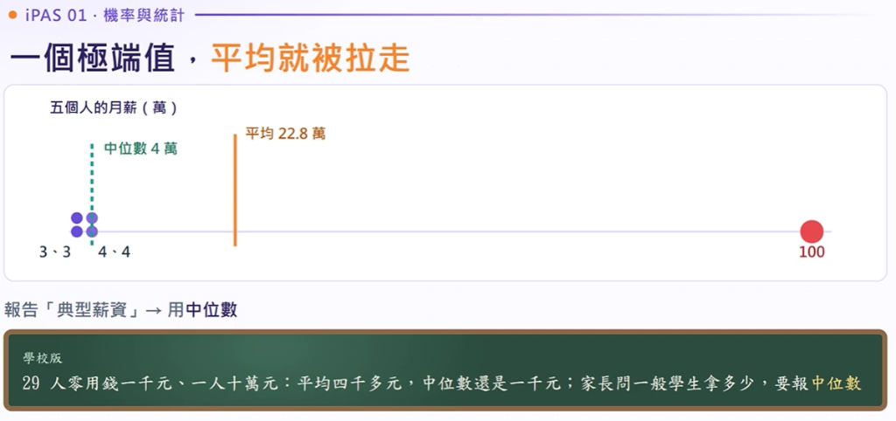

罕病檢驗的直覺陷阱與先驗機率
先問你一題：某種病的盛行率是 1%，檢驗對病人有 90% 會驗出陽性，對健康的人有 5% 會誤判成陽性。 如果某人驗出陽性，他真正生病的機率大約是多少？
許多初學者會直覺回答「九成」，忽略了健康人群佔了 99% 的龐大基底！9,900 個健康人產生的 5% 誤判（約 495 人），遠遠超過 100 個病人中被驗出的真陽性（90 人）。分母一放大，實際罹病機率只剩下約 15%！
PMF、PDF 與 CDF 的本質差異

離散抽屜 vs 連續沙堆、單點機率 vs 區間面積

等待時間 5 分鐘 vs 到診人數 5 個人
重點一：PMF 與 PDF
輸出機率 → 看得出模型有幾成把握，方便風險管控
• PMF（機率質量函數）：用於離散型隨機變數（可逐一計數，如每日訂單數、骰子點數）。每個離散數值皆擁有具體獨立機率，全部加總 строго 等於 1。
• PDF（機率密度函數）：用於連續型隨機變數（量測度量，如身高、等待秒數）。單點精確機率在數學上為 0（$P(X=x_0) = 0$），必須透過曲線底下的區間面積積分才能求出機率！
• CDF（累積分布函數）：代表隨機變數自最小值累積至指定數值 $x$ 的總機率總和（$P(X \le x)$）。
七個常見機率分佈速記口訣與秒殺表
七大分佈一句話記憶口訣與分佈特徵
一看到題目關鍵字就秒選對應分佈
重點二：七個常見分佈
掌握常見分佈之核心定義、生活化比喻與典型應用場景
• 羅吉斯回歸 (Logistic Regression)：預測二元分類結果，底層假設目標標籤服從 伯努利分佈 (Bernoulli)。
• 線性回歸 (Linear Regression)：經典普通最小平方法 (OLS) 強烈假設模型之殘差項（誤差項）服從 常態分佈 (Normal Distribution)，均值為 0。
• 神經網路權重初始化：在無先驗資訊下，常採用 均勻分佈 (Uniform) 隨機初始化權重。
• 卜瓦松 vs. 指數分佈：單位時空內的發生次數為卜瓦松分佈；而兩次事件發生的間隔等待時間則為具備無記憶性的指數分佈。
條件機率的「世界縮小法」與分母陷阱

世界縮小法則：分母永遠是已知條件族群
重點三：條件機率
世界縮小法則：B 已經發生了，A 再發生的機率
「 | 」讀作「在...的條件下」；A ∩ B ＝ A 和 B 同時發生
分母永遠是條件那一個！
先把全校縮小成女生，分母是女生人數，全校人數用不到。
條件機率核心心法： $P(A|B) = \frac{P(A \cap B)}{P(B)}$。
口訣是「先將全體世界縮小為已知條件 $B$，分母永遠放已知發生的條件」。
貝氏定理公式：P(H|E) = [P(E|H) × P(H)] / P(E) = [Likelihood × Prior] / Evidence
當資料呈現極端右偏（如年收入、信貸資產）時，建議透過對數轉換 $\log(1+x)$ 將長尾收縮，使特徵分佈趨向對稱，提升模型擬合能力。
貝氏定理、開場解謎與垃圾郵件概念漂移

舊知識先驗 ＋ 新證據似然 ＝ 新知識後驗
重點四：貝氏定理
貝氏核心思想：舊知識 ＋ 新證據 ＝ 新判斷
• 偽陽性吞噬效應：當某類別極為稀少（盛行率 1%），若健康者的誤判率（偽陽性率）哪怕只有 5%，在龐大健康基底乘算下，誤判總量依然會遠遠超過真正的病患數！
• 概念漂移 (Concept Drift)：若分類模型依據過去「40% 垃圾郵件」的舊先驗訓練，當現實中垃圾信佔比降至 5% 且先驗未及時更新時，模型會產生大量誤殺，將正常重要信件丟入垃圾桶。
SVG 互動一：貝氏定理與偽陽性吞噬模擬器
動態調整參數，實證為何檢驗陽性者實際罹病機率往往僅有一成五！
假設檢定、法庭審判與兩型錯誤決策矩陣
法庭無罪推定比喻：H0 預設無罪，證據足夠才推翻
型一錯誤冤枉好人、型二錯誤放走壞人
重點五：假設檢定 ＝ 法庭的無罪推定
先推定被告無罪（H0），除非檢察官提出壓倒性證據（p < α），才推翻無罪判決
H0 其實是對的，卻被你拒絕
H0 其實是錯的，你卻沒拒絕
假設 H0 為真，看到這麼極端資料的機率
• 型一錯誤 (Type I Error, $\alpha$)：原假設 $H_0$ 為真卻被拒絕。「冤枉好人」（實無效果卻誤判為有效果，例如誤將良民判死刑）。
• 型二錯誤 (Type II Error, $\beta$)：原假設 $H_0$ 為偽卻未被拒絕。「縱放壞人」（實有顯著差異卻未能檢測出來）。
• P 值迷思警訊：$P = 0.03$ 代表在「無差異假定」下觀察到此差異的機率只有 3%，絕對不等於「新版本有 97% 機率比舊版好」！
SVG 互動二：假設檢定與常態分佈雙尾拒絕域
動態滑動檢定統計量 $Z$ 值，即時判定是否落入拒絕域推翻 $H_0$！
敘述統計量、極端值與對數轉換長尾收回
有極端值看中位數，薪資分佈與右偏現象

數線視覺化：平均數被拉扯，中位數穩如泰山
重點六：有極端值就看中位數
敘述統計四大指針：中心位置、離散程度與分佈對稱性
29 人零用錢一千元、一人十萬元：平均四千多元，中位數還是一千元；家長問一般學生拿多少，要報中位數！
1. 典型水平報告： 當資料呈現顯著偏態（如薪資、財富、房價），平均數容易受長尾拉扯而失真，必須改用中位數 (Median) 代表大眾水準。
2. 缺失值填補策略： 面對高偏態或含極端值的欄位，切勿以平均數填補（會將極端偏差灌入正常樣本），應一律採用中位數或眾數補值。
3. 對數轉換收回長尾： 遇到右偏嚴重長尾資料（如億元客戶、百萬流量），建模前進行 log(x + 1) 轉換，可將指數量級壓回線性尺度，大幅提升回歸與神經網絡收斂穩定度。
最容易搞混的：5 大 VS 對抗彩色避坑表
5 大 VS 避坑對抗表：PMF vs PDF、二項 vs 卜瓦松...
最容易搞混的
5 組考場極易混淆的統計與機器學習核心觀念 VS 對抗表
這集帶走三句話：終極記憶金句彩色看板
終極記憶金句：世界縮小、舊知識+新證據、P小於α拒絕H0
這集帶走三句話
臨考前必背的三句終極秒殺口訣
影片同步 11:39 動態時間軸逐字稿
點選段落或拖曳進度軸可即時跳轉；支援全文關鍵字檢索。